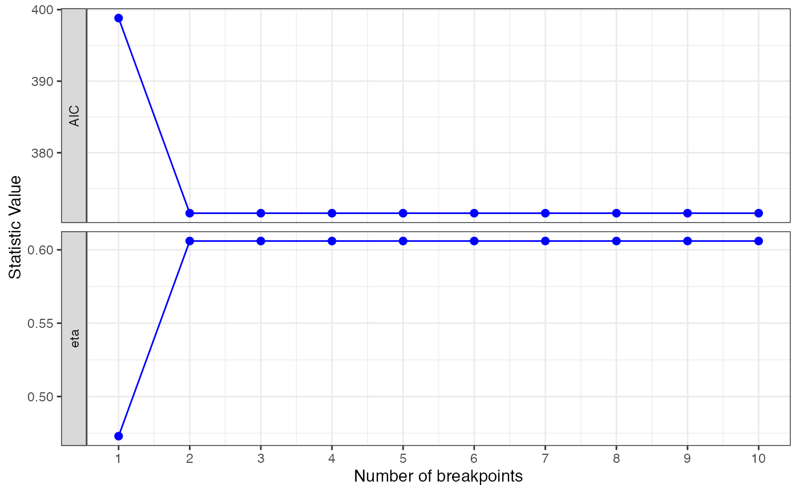

Calculates and plots the AIC and eta-squared statistics for diferent layer models based on a changepoint analysis using the mean and variance.
cp_aic_eta(x, m = 10, nl = 3)
| x | A data frame containing the location variable (depth or distance) in the first column, and the value of interest in the second column |
|---|---|
| m | The maximum number of breakpoints (# layers - 1) to look for |
| nl | The minimum number of points per layer to be considered |
A ggplot and plotly objects showing the AIC and eta-squared statistics, and a data frame with all the data and possible layer models
The example data given is intended to show the structure needed for input data. The user should follow this structure, which in general corresponds with a data frame with a sequence in the first column and the observed/measured values in the second column
cp_aic_eta(DPM_data, m = 10, nl = 3)#> Warning: The number of changepoints identified is Q, it is advised to increase Q to make sure changepoints have not been missed.#> Warning: The number of changepoints identified is Q, it is advised to increase Q to make sure changepoints have not been missed.#> $GGPLOT#> #> $PLOTLY #> #> $Data #> Prof Blows B1 B2 B3 B4 B5 B6 #> 1 0.0 0 [0,2.7] [0,2.7] [0,2.7] [0,2.7] [0,2.7] [0,2.7] #> 2 0.1 10 [0,2.7] [0,2.7] [0,2.7] [0,2.7] [0,2.7] [0,2.7] #> 3 0.2 8 [0,2.7] [0,2.7] [0,2.7] [0,2.7] [0,2.7] [0,2.7] #> 4 0.3 5 [0,2.7] [0,2.7] [0,2.7] [0,2.7] [0,2.7] [0,2.7] #> 5 0.4 5 [0,2.7] [0,2.7] [0,2.7] [0,2.7] [0,2.7] [0,2.7] #> 6 0.5 9 [0,2.7] [0,2.7] [0,2.7] [0,2.7] [0,2.7] [0,2.7] #> 7 0.6 6 [0,2.7] [0,2.7] [0,2.7] [0,2.7] [0,2.7] [0,2.7] #> 8 0.7 3 [0,2.7] [0,2.7] [0,2.7] [0,2.7] [0,2.7] [0,2.7] #> 9 0.8 3 [0,2.7] [0,2.7] [0,2.7] [0,2.7] [0,2.7] [0,2.7] #> 10 0.9 3 [0,2.7] [0,2.7] [0,2.7] [0,2.7] [0,2.7] [0,2.7] #> 11 1.0 2 [0,2.7] [0,2.7] [0,2.7] [0,2.7] [0,2.7] [0,2.7] #> 12 1.1 3 [0,2.7] [0,2.7] [0,2.7] [0,2.7] [0,2.7] [0,2.7] #> 13 1.2 3 [0,2.7] [0,2.7] [0,2.7] [0,2.7] [0,2.7] [0,2.7] #> 14 1.3 4 [0,2.7] [0,2.7] [0,2.7] [0,2.7] [0,2.7] [0,2.7] #> 15 1.4 3 [0,2.7] [0,2.7] [0,2.7] [0,2.7] [0,2.7] [0,2.7] #> 16 1.5 6 [0,2.7] [0,2.7] [0,2.7] [0,2.7] [0,2.7] [0,2.7] #> 17 1.6 4 [0,2.7] [0,2.7] [0,2.7] [0,2.7] [0,2.7] [0,2.7] #> 18 1.7 5 [0,2.7] [0,2.7] [0,2.7] [0,2.7] [0,2.7] [0,2.7] #> 19 1.8 4 [0,2.7] [0,2.7] [0,2.7] [0,2.7] [0,2.7] [0,2.7] #> 20 1.9 5 [0,2.7] [0,2.7] [0,2.7] [0,2.7] [0,2.7] [0,2.7] #> 21 2.0 6 [0,2.7] [0,2.7] [0,2.7] [0,2.7] [0,2.7] [0,2.7] #> 22 2.1 5 [0,2.7] [0,2.7] [0,2.7] [0,2.7] [0,2.7] [0,2.7] #> 23 2.2 8 [0,2.7] [0,2.7] [0,2.7] [0,2.7] [0,2.7] [0,2.7] #> 24 2.3 5 [0,2.7] [0,2.7] [0,2.7] [0,2.7] [0,2.7] [0,2.7] #> 25 2.4 7 [0,2.7] [0,2.7] [0,2.7] [0,2.7] [0,2.7] [0,2.7] #> 26 2.5 5 [0,2.7] [0,2.7] [0,2.7] [0,2.7] [0,2.7] [0,2.7] #> 27 2.6 6 [0,2.7] [0,2.7] [0,2.7] [0,2.7] [0,2.7] [0,2.7] #> 28 2.7 6 [0,2.7] [0,2.7] [0,2.7] [0,2.7] [0,2.7] [0,2.7] #> 29 2.8 7 (2.7,10] (2.7,8.7] (2.7,8.7] (2.7,8.7] (2.7,8.7] (2.7,8.7] #> 30 2.9 7 (2.7,10] (2.7,8.7] (2.7,8.7] (2.7,8.7] (2.7,8.7] (2.7,8.7] #> 31 3.0 9 (2.7,10] (2.7,8.7] (2.7,8.7] (2.7,8.7] (2.7,8.7] (2.7,8.7] #> 32 3.1 8 (2.7,10] (2.7,8.7] (2.7,8.7] (2.7,8.7] (2.7,8.7] (2.7,8.7] #> 33 3.2 7 (2.7,10] (2.7,8.7] (2.7,8.7] (2.7,8.7] (2.7,8.7] (2.7,8.7] #> 34 3.3 8 (2.7,10] (2.7,8.7] (2.7,8.7] (2.7,8.7] (2.7,8.7] (2.7,8.7] #> 35 3.4 9 (2.7,10] (2.7,8.7] (2.7,8.7] (2.7,8.7] (2.7,8.7] (2.7,8.7] #> 36 3.5 9 (2.7,10] (2.7,8.7] (2.7,8.7] (2.7,8.7] (2.7,8.7] (2.7,8.7] #> 37 3.6 8 (2.7,10] (2.7,8.7] (2.7,8.7] (2.7,8.7] (2.7,8.7] (2.7,8.7] #> 38 3.7 9 (2.7,10] (2.7,8.7] (2.7,8.7] (2.7,8.7] (2.7,8.7] (2.7,8.7] #> 39 3.8 8 (2.7,10] (2.7,8.7] (2.7,8.7] (2.7,8.7] (2.7,8.7] (2.7,8.7] #> 40 3.9 7 (2.7,10] (2.7,8.7] (2.7,8.7] (2.7,8.7] (2.7,8.7] (2.7,8.7] #> 41 4.0 7 (2.7,10] (2.7,8.7] (2.7,8.7] (2.7,8.7] (2.7,8.7] (2.7,8.7] #> 42 4.1 7 (2.7,10] (2.7,8.7] (2.7,8.7] (2.7,8.7] (2.7,8.7] (2.7,8.7] #> 43 4.2 8 (2.7,10] (2.7,8.7] (2.7,8.7] (2.7,8.7] (2.7,8.7] (2.7,8.7] #> 44 4.3 7 (2.7,10] (2.7,8.7] (2.7,8.7] (2.7,8.7] (2.7,8.7] (2.7,8.7] #> 45 4.4 8 (2.7,10] (2.7,8.7] (2.7,8.7] (2.7,8.7] (2.7,8.7] (2.7,8.7] #> 46 4.5 7 (2.7,10] (2.7,8.7] (2.7,8.7] (2.7,8.7] (2.7,8.7] (2.7,8.7] #> 47 4.6 7 (2.7,10] (2.7,8.7] (2.7,8.7] (2.7,8.7] (2.7,8.7] (2.7,8.7] #> 48 4.7 6 (2.7,10] (2.7,8.7] (2.7,8.7] (2.7,8.7] (2.7,8.7] (2.7,8.7] #> 49 4.8 7 (2.7,10] (2.7,8.7] (2.7,8.7] (2.7,8.7] (2.7,8.7] (2.7,8.7] #> 50 4.9 7 (2.7,10] (2.7,8.7] (2.7,8.7] (2.7,8.7] (2.7,8.7] (2.7,8.7] #> 51 5.0 8 (2.7,10] (2.7,8.7] (2.7,8.7] (2.7,8.7] (2.7,8.7] (2.7,8.7] #> 52 5.1 7 (2.7,10] (2.7,8.7] (2.7,8.7] (2.7,8.7] (2.7,8.7] (2.7,8.7] #> 53 5.2 6 (2.7,10] (2.7,8.7] (2.7,8.7] (2.7,8.7] (2.7,8.7] (2.7,8.7] #> 54 5.3 8 (2.7,10] (2.7,8.7] (2.7,8.7] (2.7,8.7] (2.7,8.7] (2.7,8.7] #> 55 5.4 9 (2.7,10] (2.7,8.7] (2.7,8.7] (2.7,8.7] (2.7,8.7] (2.7,8.7] #> 56 5.5 6 (2.7,10] (2.7,8.7] (2.7,8.7] (2.7,8.7] (2.7,8.7] (2.7,8.7] #> 57 5.6 8 (2.7,10] (2.7,8.7] (2.7,8.7] (2.7,8.7] (2.7,8.7] (2.7,8.7] #> 58 5.7 8 (2.7,10] (2.7,8.7] (2.7,8.7] (2.7,8.7] (2.7,8.7] (2.7,8.7] #> 59 5.8 9 (2.7,10] (2.7,8.7] (2.7,8.7] (2.7,8.7] (2.7,8.7] (2.7,8.7] #> 60 5.9 10 (2.7,10] (2.7,8.7] (2.7,8.7] (2.7,8.7] (2.7,8.7] (2.7,8.7] #> 61 6.0 10 (2.7,10] (2.7,8.7] (2.7,8.7] (2.7,8.7] (2.7,8.7] (2.7,8.7] #> 62 6.1 9 (2.7,10] (2.7,8.7] (2.7,8.7] (2.7,8.7] (2.7,8.7] (2.7,8.7] #> 63 6.2 9 (2.7,10] (2.7,8.7] (2.7,8.7] (2.7,8.7] (2.7,8.7] (2.7,8.7] #> 64 6.3 9 (2.7,10] (2.7,8.7] (2.7,8.7] (2.7,8.7] (2.7,8.7] (2.7,8.7] #> 65 6.4 11 (2.7,10] (2.7,8.7] (2.7,8.7] (2.7,8.7] (2.7,8.7] (2.7,8.7] #> 66 6.5 9 (2.7,10] (2.7,8.7] (2.7,8.7] (2.7,8.7] (2.7,8.7] (2.7,8.7] #> 67 6.6 7 (2.7,10] (2.7,8.7] (2.7,8.7] (2.7,8.7] (2.7,8.7] (2.7,8.7] #> 68 6.7 9 (2.7,10] (2.7,8.7] (2.7,8.7] (2.7,8.7] (2.7,8.7] (2.7,8.7] #> 69 6.8 10 (2.7,10] (2.7,8.7] (2.7,8.7] (2.7,8.7] (2.7,8.7] (2.7,8.7] #> 70 6.9 9 (2.7,10] (2.7,8.7] (2.7,8.7] (2.7,8.7] (2.7,8.7] (2.7,8.7] #> 71 7.0 9 (2.7,10] (2.7,8.7] (2.7,8.7] (2.7,8.7] (2.7,8.7] (2.7,8.7] #> 72 7.1 10 (2.7,10] (2.7,8.7] (2.7,8.7] (2.7,8.7] (2.7,8.7] (2.7,8.7] #> 73 7.2 8 (2.7,10] (2.7,8.7] (2.7,8.7] (2.7,8.7] (2.7,8.7] (2.7,8.7] #> 74 7.3 9 (2.7,10] (2.7,8.7] (2.7,8.7] (2.7,8.7] (2.7,8.7] (2.7,8.7] #> 75 7.4 10 (2.7,10] (2.7,8.7] (2.7,8.7] (2.7,8.7] (2.7,8.7] (2.7,8.7] #> 76 7.5 8 (2.7,10] (2.7,8.7] (2.7,8.7] (2.7,8.7] (2.7,8.7] (2.7,8.7] #> 77 7.6 7 (2.7,10] (2.7,8.7] (2.7,8.7] (2.7,8.7] (2.7,8.7] (2.7,8.7] #> 78 7.7 7 (2.7,10] (2.7,8.7] (2.7,8.7] (2.7,8.7] (2.7,8.7] (2.7,8.7] #> 79 7.8 7 (2.7,10] (2.7,8.7] (2.7,8.7] (2.7,8.7] (2.7,8.7] (2.7,8.7] #> 80 7.9 7 (2.7,10] (2.7,8.7] (2.7,8.7] (2.7,8.7] (2.7,8.7] (2.7,8.7] #> 81 8.0 8 (2.7,10] (2.7,8.7] (2.7,8.7] (2.7,8.7] (2.7,8.7] (2.7,8.7] #> 82 8.1 8 (2.7,10] (2.7,8.7] (2.7,8.7] (2.7,8.7] (2.7,8.7] (2.7,8.7] #> 83 8.2 8 (2.7,10] (2.7,8.7] (2.7,8.7] (2.7,8.7] (2.7,8.7] (2.7,8.7] #> 84 8.3 7 (2.7,10] (2.7,8.7] (2.7,8.7] (2.7,8.7] (2.7,8.7] (2.7,8.7] #> 85 8.4 10 (2.7,10] (2.7,8.7] (2.7,8.7] (2.7,8.7] (2.7,8.7] (2.7,8.7] #> 86 8.5 7 (2.7,10] (2.7,8.7] (2.7,8.7] (2.7,8.7] (2.7,8.7] (2.7,8.7] #> 87 8.6 8 (2.7,10] (2.7,8.7] (2.7,8.7] (2.7,8.7] (2.7,8.7] (2.7,8.7] #> 88 8.7 9 (2.7,10] (2.7,8.7] (2.7,8.7] (2.7,8.7] (2.7,8.7] (2.7,8.7] #> 89 8.8 10 (2.7,10] (8.7,10] (8.7,10] (8.7,10] (8.7,10] (8.7,10] #> 90 8.9 10 (2.7,10] (8.7,10] (8.7,10] (8.7,10] (8.7,10] (8.7,10] #> 91 9.0 10 (2.7,10] (8.7,10] (8.7,10] (8.7,10] (8.7,10] (8.7,10] #> 92 9.1 11 (2.7,10] (8.7,10] (8.7,10] (8.7,10] (8.7,10] (8.7,10] #> 93 9.2 10 (2.7,10] (8.7,10] (8.7,10] (8.7,10] (8.7,10] (8.7,10] #> 94 9.3 10 (2.7,10] (8.7,10] (8.7,10] (8.7,10] (8.7,10] (8.7,10] #> 95 9.4 11 (2.7,10] (8.7,10] (8.7,10] (8.7,10] (8.7,10] (8.7,10] #> 96 9.5 12 (2.7,10] (8.7,10] (8.7,10] (8.7,10] (8.7,10] (8.7,10] #> 97 9.6 12 (2.7,10] (8.7,10] (8.7,10] (8.7,10] (8.7,10] (8.7,10] #> 98 9.7 12 (2.7,10] (8.7,10] (8.7,10] (8.7,10] (8.7,10] (8.7,10] #> 99 9.8 10 (2.7,10] (8.7,10] (8.7,10] (8.7,10] (8.7,10] (8.7,10] #> 100 9.9 10 (2.7,10] (8.7,10] (8.7,10] (8.7,10] (8.7,10] (8.7,10] #> 101 10.0 11 (2.7,10] (8.7,10] (8.7,10] (8.7,10] (8.7,10] (8.7,10] #> B7 B8 B9 B10 #> 1 [0,2.7] [0,2.7] [0,2.7] [0,2.7] #> 2 [0,2.7] [0,2.7] [0,2.7] [0,2.7] #> 3 [0,2.7] [0,2.7] [0,2.7] [0,2.7] #> 4 [0,2.7] [0,2.7] [0,2.7] [0,2.7] #> 5 [0,2.7] [0,2.7] [0,2.7] [0,2.7] #> 6 [0,2.7] [0,2.7] [0,2.7] [0,2.7] #> 7 [0,2.7] [0,2.7] [0,2.7] [0,2.7] #> 8 [0,2.7] [0,2.7] [0,2.7] [0,2.7] #> 9 [0,2.7] [0,2.7] [0,2.7] [0,2.7] #> 10 [0,2.7] [0,2.7] [0,2.7] [0,2.7] #> 11 [0,2.7] [0,2.7] [0,2.7] [0,2.7] #> 12 [0,2.7] [0,2.7] [0,2.7] [0,2.7] #> 13 [0,2.7] [0,2.7] [0,2.7] [0,2.7] #> 14 [0,2.7] [0,2.7] [0,2.7] [0,2.7] #> 15 [0,2.7] [0,2.7] [0,2.7] [0,2.7] #> 16 [0,2.7] [0,2.7] [0,2.7] [0,2.7] #> 17 [0,2.7] [0,2.7] [0,2.7] [0,2.7] #> 18 [0,2.7] [0,2.7] [0,2.7] [0,2.7] #> 19 [0,2.7] [0,2.7] [0,2.7] [0,2.7] #> 20 [0,2.7] [0,2.7] [0,2.7] [0,2.7] #> 21 [0,2.7] [0,2.7] [0,2.7] [0,2.7] #> 22 [0,2.7] [0,2.7] [0,2.7] [0,2.7] #> 23 [0,2.7] [0,2.7] [0,2.7] [0,2.7] #> 24 [0,2.7] [0,2.7] [0,2.7] [0,2.7] #> 25 [0,2.7] [0,2.7] [0,2.7] [0,2.7] #> 26 [0,2.7] [0,2.7] [0,2.7] [0,2.7] #> 27 [0,2.7] [0,2.7] [0,2.7] [0,2.7] #> 28 [0,2.7] [0,2.7] [0,2.7] [0,2.7] #> 29 (2.7,8.7] (2.7,8.7] (2.7,8.7] (2.7,8.7] #> 30 (2.7,8.7] (2.7,8.7] (2.7,8.7] (2.7,8.7] #> 31 (2.7,8.7] (2.7,8.7] (2.7,8.7] (2.7,8.7] #> 32 (2.7,8.7] (2.7,8.7] (2.7,8.7] (2.7,8.7] #> 33 (2.7,8.7] (2.7,8.7] (2.7,8.7] (2.7,8.7] #> 34 (2.7,8.7] (2.7,8.7] (2.7,8.7] (2.7,8.7] #> 35 (2.7,8.7] (2.7,8.7] (2.7,8.7] (2.7,8.7] #> 36 (2.7,8.7] (2.7,8.7] (2.7,8.7] (2.7,8.7] #> 37 (2.7,8.7] (2.7,8.7] (2.7,8.7] (2.7,8.7] #> 38 (2.7,8.7] (2.7,8.7] (2.7,8.7] (2.7,8.7] #> 39 (2.7,8.7] (2.7,8.7] (2.7,8.7] (2.7,8.7] #> 40 (2.7,8.7] (2.7,8.7] (2.7,8.7] (2.7,8.7] #> 41 (2.7,8.7] (2.7,8.7] (2.7,8.7] (2.7,8.7] #> 42 (2.7,8.7] (2.7,8.7] (2.7,8.7] (2.7,8.7] #> 43 (2.7,8.7] (2.7,8.7] (2.7,8.7] (2.7,8.7] #> 44 (2.7,8.7] (2.7,8.7] (2.7,8.7] (2.7,8.7] #> 45 (2.7,8.7] (2.7,8.7] (2.7,8.7] (2.7,8.7] #> 46 (2.7,8.7] (2.7,8.7] (2.7,8.7] (2.7,8.7] #> 47 (2.7,8.7] (2.7,8.7] (2.7,8.7] (2.7,8.7] #> 48 (2.7,8.7] (2.7,8.7] (2.7,8.7] (2.7,8.7] #> 49 (2.7,8.7] (2.7,8.7] (2.7,8.7] (2.7,8.7] #> 50 (2.7,8.7] (2.7,8.7] (2.7,8.7] (2.7,8.7] #> 51 (2.7,8.7] (2.7,8.7] (2.7,8.7] (2.7,8.7] #> 52 (2.7,8.7] (2.7,8.7] (2.7,8.7] (2.7,8.7] #> 53 (2.7,8.7] (2.7,8.7] (2.7,8.7] (2.7,8.7] #> 54 (2.7,8.7] (2.7,8.7] (2.7,8.7] (2.7,8.7] #> 55 (2.7,8.7] (2.7,8.7] (2.7,8.7] (2.7,8.7] #> 56 (2.7,8.7] (2.7,8.7] (2.7,8.7] (2.7,8.7] #> 57 (2.7,8.7] (2.7,8.7] (2.7,8.7] (2.7,8.7] #> 58 (2.7,8.7] (2.7,8.7] (2.7,8.7] (2.7,8.7] #> 59 (2.7,8.7] (2.7,8.7] (2.7,8.7] (2.7,8.7] #> 60 (2.7,8.7] (2.7,8.7] (2.7,8.7] (2.7,8.7] #> 61 (2.7,8.7] (2.7,8.7] (2.7,8.7] (2.7,8.7] #> 62 (2.7,8.7] (2.7,8.7] (2.7,8.7] (2.7,8.7] #> 63 (2.7,8.7] (2.7,8.7] (2.7,8.7] (2.7,8.7] #> 64 (2.7,8.7] (2.7,8.7] (2.7,8.7] (2.7,8.7] #> 65 (2.7,8.7] (2.7,8.7] (2.7,8.7] (2.7,8.7] #> 66 (2.7,8.7] (2.7,8.7] (2.7,8.7] (2.7,8.7] #> 67 (2.7,8.7] (2.7,8.7] (2.7,8.7] (2.7,8.7] #> 68 (2.7,8.7] (2.7,8.7] (2.7,8.7] (2.7,8.7] #> 69 (2.7,8.7] (2.7,8.7] (2.7,8.7] (2.7,8.7] #> 70 (2.7,8.7] (2.7,8.7] (2.7,8.7] (2.7,8.7] #> 71 (2.7,8.7] (2.7,8.7] (2.7,8.7] (2.7,8.7] #> 72 (2.7,8.7] (2.7,8.7] (2.7,8.7] (2.7,8.7] #> 73 (2.7,8.7] (2.7,8.7] (2.7,8.7] (2.7,8.7] #> 74 (2.7,8.7] (2.7,8.7] (2.7,8.7] (2.7,8.7] #> 75 (2.7,8.7] (2.7,8.7] (2.7,8.7] (2.7,8.7] #> 76 (2.7,8.7] (2.7,8.7] (2.7,8.7] (2.7,8.7] #> 77 (2.7,8.7] (2.7,8.7] (2.7,8.7] (2.7,8.7] #> 78 (2.7,8.7] (2.7,8.7] (2.7,8.7] (2.7,8.7] #> 79 (2.7,8.7] (2.7,8.7] (2.7,8.7] (2.7,8.7] #> 80 (2.7,8.7] (2.7,8.7] (2.7,8.7] (2.7,8.7] #> 81 (2.7,8.7] (2.7,8.7] (2.7,8.7] (2.7,8.7] #> 82 (2.7,8.7] (2.7,8.7] (2.7,8.7] (2.7,8.7] #> 83 (2.7,8.7] (2.7,8.7] (2.7,8.7] (2.7,8.7] #> 84 (2.7,8.7] (2.7,8.7] (2.7,8.7] (2.7,8.7] #> 85 (2.7,8.7] (2.7,8.7] (2.7,8.7] (2.7,8.7] #> 86 (2.7,8.7] (2.7,8.7] (2.7,8.7] (2.7,8.7] #> 87 (2.7,8.7] (2.7,8.7] (2.7,8.7] (2.7,8.7] #> 88 (2.7,8.7] (2.7,8.7] (2.7,8.7] (2.7,8.7] #> 89 (8.7,10] (8.7,10] (8.7,10] (8.7,10] #> 90 (8.7,10] (8.7,10] (8.7,10] (8.7,10] #> 91 (8.7,10] (8.7,10] (8.7,10] (8.7,10] #> 92 (8.7,10] (8.7,10] (8.7,10] (8.7,10] #> 93 (8.7,10] (8.7,10] (8.7,10] (8.7,10] #> 94 (8.7,10] (8.7,10] (8.7,10] (8.7,10] #> 95 (8.7,10] (8.7,10] (8.7,10] (8.7,10] #> 96 (8.7,10] (8.7,10] (8.7,10] (8.7,10] #> 97 (8.7,10] (8.7,10] (8.7,10] (8.7,10] #> 98 (8.7,10] (8.7,10] (8.7,10] (8.7,10] #> 99 (8.7,10] (8.7,10] (8.7,10] (8.7,10] #> 100 (8.7,10] (8.7,10] (8.7,10] (8.7,10] #> 101 (8.7,10] (8.7,10] (8.7,10] (8.7,10] #>